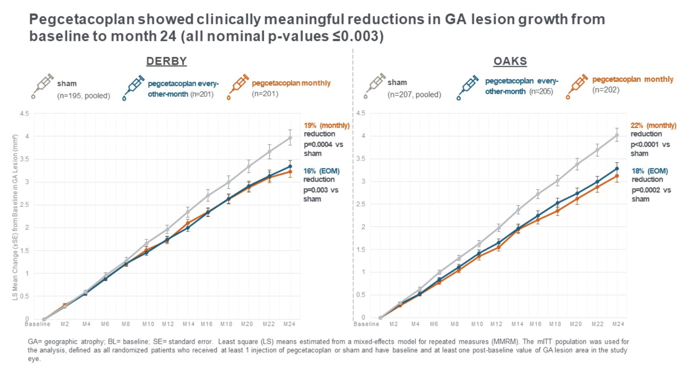
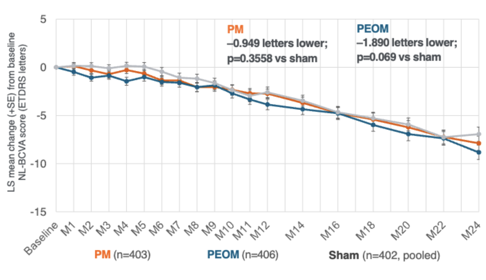
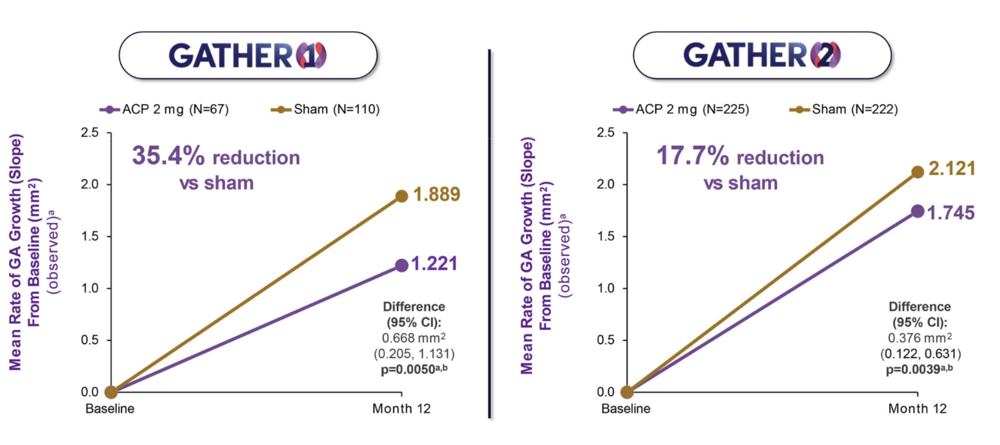
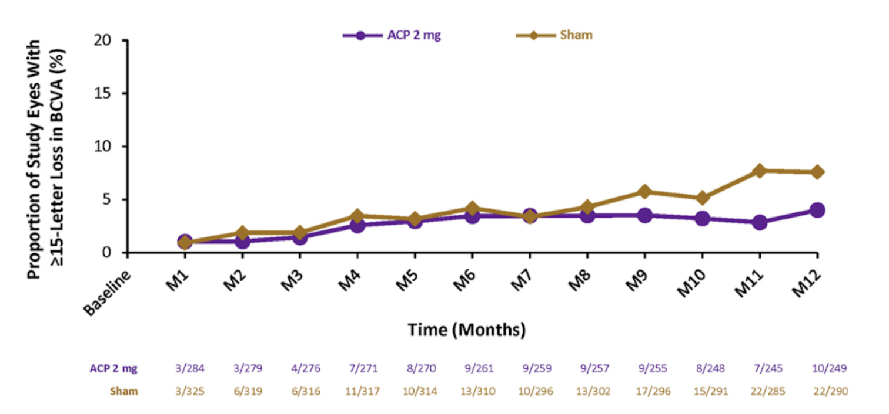
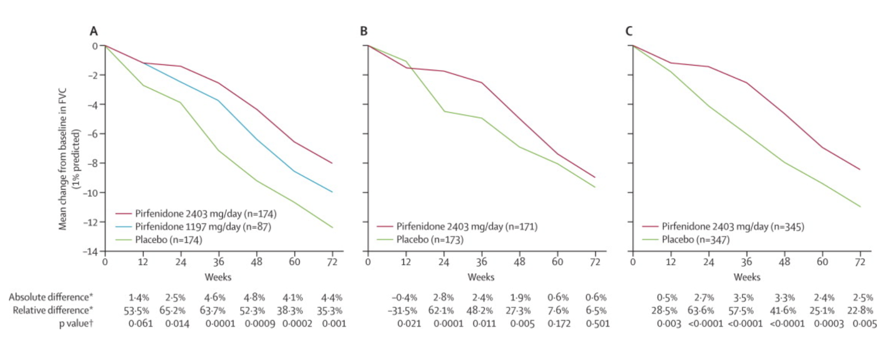
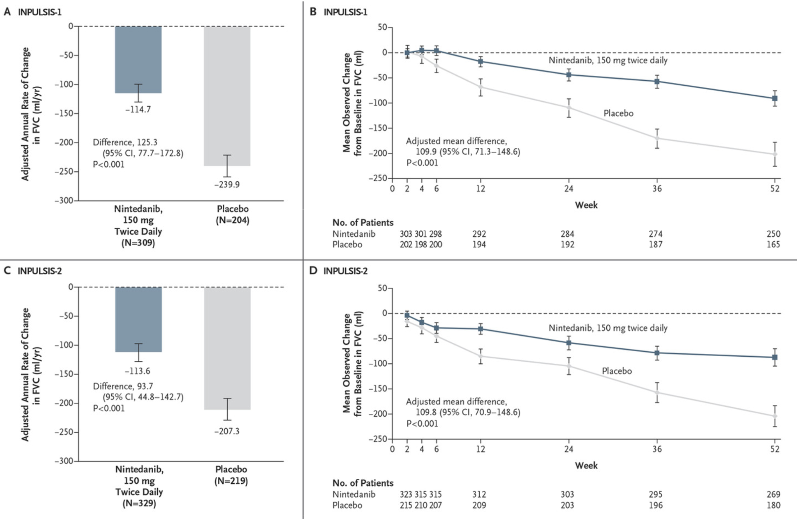
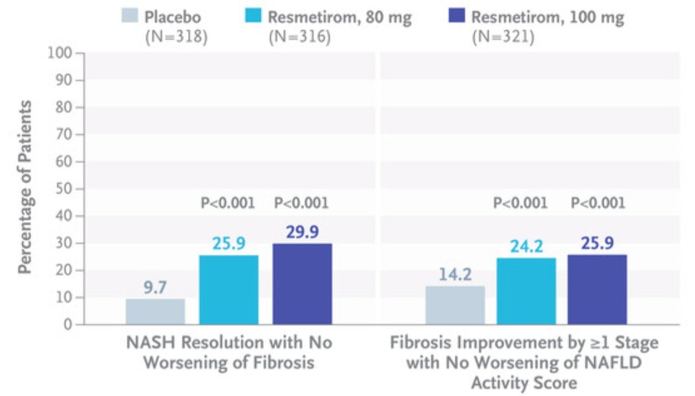
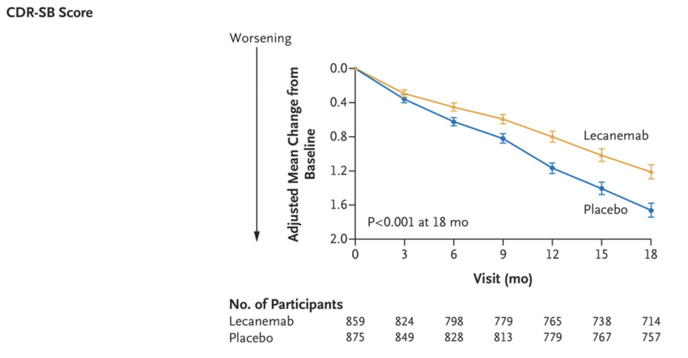
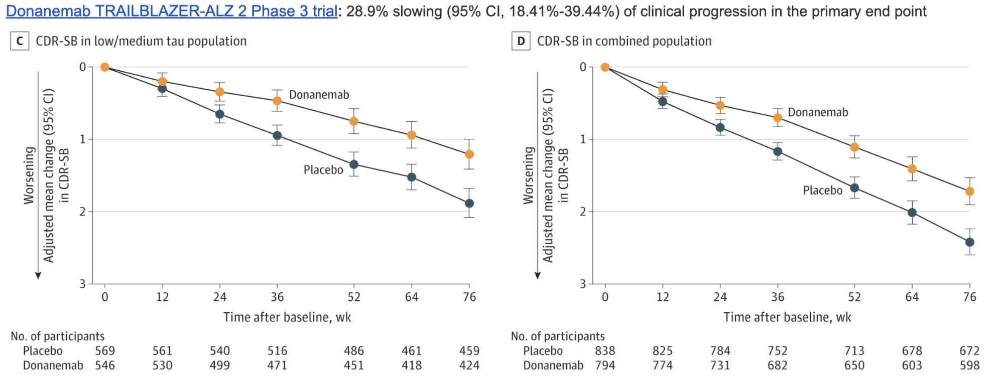

Just how bad are we at treating age-related diseases?
Whether you believe in preventing damage (the core aim of the aging field, though that's not the focus of this post) or treating damage as it arises, our current best efforts in both treatment and mechanism selection haven't yielded promising results. None of the approved drugs for age-related diseases reverse any damage.
They don't even halt disease progression. The primary endpoints mainly assess whether the treatment causes a slightly slower rate of decline than would occur otherwise.
In some cases, approved drugs show no objective functional benefit at all. So, how did we get here?
Geographic Atrophy (GA)
GA is a gradual loss of central vision due to the breakdown of the retinal cells responsible for detailed sight, retinal pigment epithelium, and photoreceptors.
TLDR:
- 2 approved drugs, Syfovre (pegcetacoplan) and Izervay (avacincaptad pegol) - both approved in 2023
- Neither drug halts disease progression. Atrophy progresses at a slightly slower rate (~19% fewer lesions after 2 years of monthly Syfovre eye injections)
- Importantly, recent GA trials stopped relying on eyesight (measured through visual acuity score BCVA) as the primary endpoint. After multiple drugs failed to improve vision, the field switched to "lesion growth" as a trial readout
- As a result, both Syfovre (pegcetacoplan) and Izervay (ACP) treated patients had a decline in vision similar to untreated patients - that is, while results of the trial were statistically significant, you or your family wouldn't be able to tell as to whether you took the drug




Idiopathic Pulmonary Fibrosis (IPF)
IPF is a disease where the lungs become scarred over time for no clear reason. This scarring makes it harder for your lungs to take in oxygen, so people with IPF often feel short of breath or have a dry cough.
TLDR:
- 2 approved drugs, nintedanib, pirfenidone - both approved in 2014
- The primary endpoint for the trial is forced vital capacity (FVC) – the total amount of air a person can forcibly exhale from their lungs
- Neither drug improves prognosis or FVC, but rather slightly decreases its decline
- It's a usual practice to run 2 large Phase 3 trials if the drug is intended for approval. In the case of pirfenidone, one of the Phase 3 trials (STUDY 006 of the CAPACITY Trial) showed no improvement in the primary endpoint relative to placebo. The drug was approved nevertheless.


MASH
MASH is a liver disease that happens when too much fat builds up in the liver, causing hepatocyte damage and acute inflammation. It usually starts with just extra fat in the liver, but over time, leads to fibrosis (scarring), and eventually liver cancer.
TLDR:
- Resmetirom was approved in 2024, and it is the first and only drug approved for MASH
- MASH drugs are tested through 2 metrics: MASH resolution with no worsening of fibrosis (a scoring metric that focuses on metabolic and inflammatory aspects of the disease) and Fibrosis improvement with no worsening of metabolic aspects of the disease (4 stages of fibrosis: F1-F4)
- In the high-dose group of resmetirom, MASH resolution was achieved in 29.9% vs 9.7% resolution in placebo
- Worth noting that resmetirom and other MASH drugs are primarily focused on earlier stages of liver disease - F1-F3 - and very few drugs are being tested for late-stage fibrotic MASH (F4)

Alzheimer's
Alzheimer's is a neurodegenerative disease with largely unknown drivers, which has triggered many disputes and investigations in the scientific community. It is characterized by cognitive decline, memory loss, and eventually, the inability to perform basic functions.
TLDR:
- The primary endpoint for AD trials is CDR (Clinical Dementia Rating), which measures orientation, memory, problem-solving, interactions with the community, and home life
- Back in 2021, the FDA approved Aducanumab, targeting beta-amyloid, which was later taken from the market because many believed it not to be efficacious
- In 2023, the FDA approved lecanemab (Leqembi), with a mechanism of action identical to Aducanumab. The European Medicines Agency ruled against approving the drug.
- In the lecanemab trial, both the treatment group and the placebo group declined in Clinical Dementia Rating, all showing progressive cognitive impairment, amyloid deposition by PET scans or in their cerebrospinal fluid. The treatment group declined less, with the result being "statistically significant," and many clinicians pointed out that statistically significant is not the same as clinically meaningful
- Donanemab (Kisunla) is yet another anti-amyloid antibody approved recently, which had a slightly different trial design by stratifying patients based on tau levels (another protein accumulated in AD), with low-tau patients showing slightly better response to treatment
- Unfortunately, treated patients also showed cerebral edema (ARIA-E), 2.1% of the placebo group as opposed to 24% of the treatment group; and brain microhemorrhages (ARIA-H), 13.6% in the placebo and 31.4% in the treatment
- Many of the AD drugs have a pretty bad side-effect profile, including cerebral shrinkage (a shared feature of beta-amyloid drugs)

